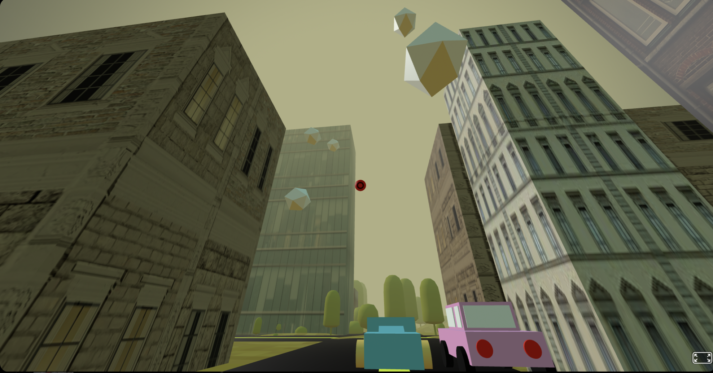

During my junior year I made a freedom project. The "Freedom Project" for SEP11 is a year-long project all about making something using JavaScript along with a third-party JS tool. For my project, I chose to study Aframe in order to help me make a shooting game. My Freedom Project’s main goal is to create a decompression game. We designed an interesting city with a unique landscape for people to explore. Additionally, we developed a shooting game where players can take out their frustration by shooting targets. Unfortunately, we faced complications with adding music to make the game more relaxing, so it had to be removed.
"The Quiet City," is a game create to be a place where you can relax. The game has multiple uses. You can shoot the target(clouds) to take out your frustration. You can shoot at the clouds using the spacebar. After 3 minutes, when the targets disappear, you can explore the city, gaze at the starry stars or find our mascot! I hope our game helps you de-stress!
My partner and I are using A-Frame to make a 3D simulation of a game. We want to create a shooting game that can help release pent-up stress from school, work, and etc. Our goal is to make a game that is interesting and relaxing. It may sound ironic that a shooting game can be relaxing, but all of the frustration and anger or stress can be let out through playing games. According to the article How Do Video Games Reduce Stress?, we are going to use games that have already been made through A-Frame to take inspiration and eventually make a game that has 360 images where you can move and interact with objects like cars, airplanes, and guns. We will be using A-Frame to create a 360-degree interactive game featuring moving and interactable items such as vehicles, aircraft, and firearms.
One of the problems I faced was creating the shooting component. It was hard for me to code a way to shoot the targets and make them disappear. I couldn’t figure it out until we read many documents/tutorials and spent a lot of time coding on jsbin. Another difficulty was creating the environment, as it was very time-consuming to design each building and position them.
I struggled with fixing the setting and positioning:
The positioning took hours get them in the places I wanted them in.
Somtimes it’s the simplest things that are the most time consuming.
Fixing the camera:
The shoot component caused the camera to not move up/ down
`
Time Management: We both followed a strict schedule and worked on our project at different times when we couldn't work together. When we could work together, we would share our findings. Communication: I had to communicate and collaborate and share my findings with my partner on many occasions to ensure we were on the same page. Every weekend, my partner and I call each other and share our screens when we code to show each other what we are doing. Calling each other makes us accountable to do the work. Organization: I had to organize my code so it was clear. Organizing the code was really important because I was learning something new. Organization was important for me to undertsand what each code did and if I had a bug. The main thing I focused on was indexation to organize my code better. Research/Growth mindset: I had to incorporate a growth mindset because I would have to research a lot and for that I would need patience to able able to research. Following through the tutorial was also a hassle because there were many new things I learned at the same time.
Being confidence in your work is crucial. During the presentation, focusing on weak points like eye contact and volume is essential, and improvisation can be beneficial. When presenting to a crowd of people during the fair, I adjusted my elevator pitch based on the audience, incorporating friendly jokes or shortening explanations as needed. I also learned the importance of being prepared to handle additional work when team members fall short. Key components of a good presentation include maintaining a steady pace and being flexible. Moving forward, I will continue to learn from my mistakes and allocate extra time for unforeseen challenges to ensure confidence and preparedness in future presentations.
